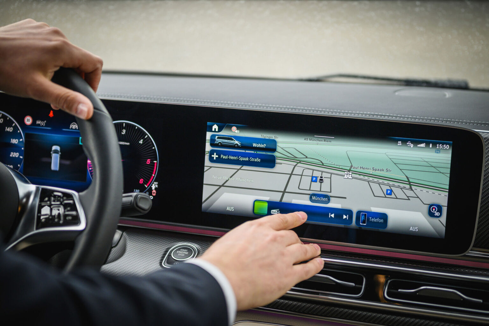

Chauffeurservice München für Unternehmen
Vom Flughafen MUC über die Messe München bis zu den Konzernzentralen der Stadt. Ein Fahrer, der die Wege kennt.
Wirtschaftsmetropole mit engen Zeitplänen
München gehört zu den wirtschaftsstärksten Städten Deutschlands. Konzernzentralen wie BMW, Siemens und Allianz sitzen hier, dazu einer der größten Messestandorte Europas. Für Unternehmen bedeutet das enge Zeitpläne, wechselnde Termine und Gäste, die pünktlich ankommen müssen. Genau dafür sind wir da.
Was den Chauffeurservice in München ausmacht
Flughafen München (MUC)
Der Flughafen liegt rund 40 Kilometer nördöstlich der Innenstadt. Je nach Verkehrslage dauert die Fahrt 35 bis 50 Minuten. Wir verfolgen den Flugstatus in Echtzeit und passen die Abholzeit bei Verspätungen an.
Messe München
Auf dem Gelände in Riem finden Leitmessen wie die bauma, ISPO und IAA Mobility statt. Während der Messewochen erhöhen wir unsere Fahrzeugkapazität, damit jede Anfrage bedient werden kann.
Konzernzentralen
BMW Welt, Siemens Campus und die Allianz Arena liegen alle in kurzer Fahrzeit vom Zentrum. Viele unserer Firmenkunden buchen regelmäßige Fahrten zwischen diesen Standorten und der Innenstadt.
Innenstadt und Adressen
Bayerischer Hof, Vier Jahreszeiten Kempinski und Charles Hotel gehören zu den Häusern, an denen wir regelmäßig Gäste abholen. Unsere Chauffeure kennen die Vorfahrten und Abläufe der jeweiligen Häuser.
Darauf verlassen sich unsere Kunden in München
Ortskenntnis
Unsere Fahrer kennen Baustellen, Sperrungen und Stauzeiten in München und wählen die Route entsprechend.
Flugüberwachung
Ankunftszeiten am MUC werden live verfolgt, Wartezeiten am Terminal entfallen dadurch.
Diskretion
Für Vorstände und Gäste, die während der Fahrt ungestört arbeiten oder telefonieren möchten.
Firmenabrechnung
Eine Rechnung pro Monat statt einzelner Belege pro Fahrt, praktisch für Buchhaltung und Office Management.
Die passende Klasse für jeden Termin
Für Vorstandsfahrten empfehlen wir die First Class mit S-Klasse oder Audi A8. Für Gruppen und Messeteams steht die V-Klasse mit sechs Sitzplätzen bereit.
Alle Fahrzeugklassen ansehenHäufige Fragen zum Chauffeurservice in München
Je nach Verkehr zwischen 35 und 50 Minuten. Zur Hauptverkehrszeit sollte etwas mehr Zeit eingeplant werden.
Ja, insbesondere während großer Messen wie der bauma oder ISPO koordinieren wir Shuttle-Fahrten zwischen Hotels und dem Messegelände in Riem.
Kurzfristige Buchungen sind in der Regel innerhalb weniger Stunden möglich, abhängig von der Verfügbarkeit der Flotte.
Ja, wir fahren regelmäßig zu Zielen im Umland sowie zu anderen deutschen Großstädten.
Chauffeurservice in München buchen.
Schildern Sie uns Ihren Termin, wir stellen den passenden Fahrer und das passende Fahrzeug bereit.